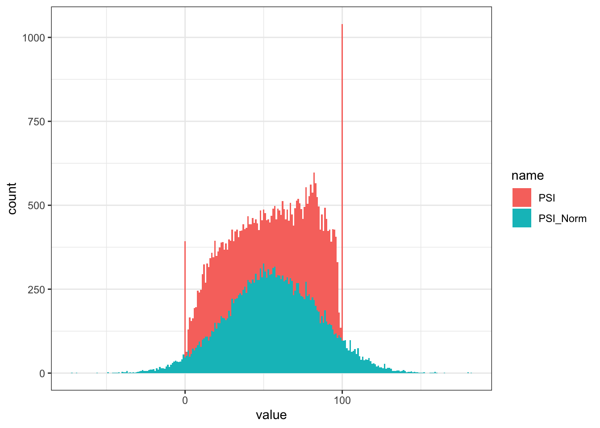
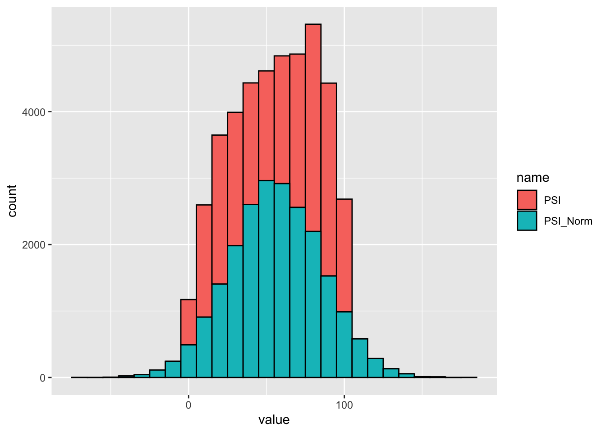

Code
library(ggplot2)
library(ggrepel)
library(ggforce)
library(pheatmap)
library(UpSetR)
library(viridis)
library(rstatix)
library(Cairo)
library(patchwork)
library(crayon)Alternative splicing (AS) events included in this analysis are:
alternatively spliced exons and microexons
alternative splice sites (acceptor at 3’ and donor at 5’)
intron retentions
For each sample AS events were quantified using the percentage of sequence inclusion (PSI) metric, which is a number ranging from zero and 100, corresponding to full sequence skipping or full sequence inclusion in a transcript respectively. Constitutively spliced exons have a PSI of 100.
These documents reports the downstream AS analysis after processing the samples with VAST-TOOLS(Tapial et al. 2017) using the following steps:
vast-tools(Tapial et al. 2017) was used to quantify both AS events PSI and gene expression as normalised TPMs using limma::normalizeBetweenArrays and cRPKMs per gene. The analysis was performed using vast-tool v2.5.1.
The raw FASTQ files were processed as following:
vast-tools maps the RNA-seq reads to a predefined set of exon-exon junctions (EEJ). This set of EEJ is an “enriched” version of all ENSEMBL transcripts. This dataset was analysed using Homo sapiens assembly hg38, based on ENSEMBL v88. To do so vast-tools align first trims the reads to 50 nucleotides fragments with a sliding window define by --stepSize (usually 25 or 20 nt). The trimmed reads are aligned to the EEJ libraries using bowtie v1.2. The trimmed reads must have at least 8 nucleotides overlapping the splice site and be uniquely mapping to be considered for quantification.
The raw fastq files were processed with vast-tools align with options --sp hg38, ---IR_version 2, --stepSize 20, and --expr. Reads strand detection is done automatically.
To pool individual replicates to increase sequencing read depth the vast-tools merge module merges samples into a super sample. This is basically equivalent to concatenating FASTQ files with cat before running align. This helps prevent biases in AS events identification towards highly expressed genes. For this analysis the 3 individual replicates per condition were merged.
To build the main output containing all detected AS events the vast-tools combine module takes intermediate output files and generate a table named as *INCLUSION_LEVELS_FULL-*<SPECIES_ASSEMBLY>-<SAMPLES_NUM>-v251.tab. This file contains an AS event on each row, the first 6 columns contain basic information about the event (e.g. gene name, length, and coordinates) followed by a column with the PSI and a quality score column for each sample. Further details about the comma separated quality scores can be found here. This step also generates a similar table gene expression counts expressed as cRPKM or TPM.
All individual replicates and the merged super samples were combined with vast-tools combine with options --add_version, --TPM and --norm for gene expression.
To calculate the differential inclusion level (∆PSI) between samples the combined table was processed with vast-tools compare using the HeLa FRT samples as control (-a) and the following filtering parameters: --min_dPSI 15, --min_range 0, --max_dPSI 5, --print_sets, --noB3, --p_IR, --print_dPSI, and --GO. HeLa TAF2 OE and NLS-TAF2 ∆IDR OE were each compared to the control separately. The comparison was done using the 3 individual replicates per condition or by using only the merged super sample. This is denoted in the file names as _uniq_ or _mrgd_.
To simplify and filter the full inclusion table the module vast-tools tidy produces a table with only events that have a minimum coverage that are more likely to relevant for downstream analysis.
Full inclusion table was filtered using vast-tools tidy with --noVLOW,--noB3, --p_IR, and --add_names.
Lastly, a different differential splicing analysis was performed with vast-tools diff using Bayesian inference. Briefly , it calculates PSI posterior distributions using Bayes’ theorem and employs replicates to estimate joint posterior distributions. The statistical significance between two posterior distributions is determined by comparing their differences using empirical distributions (Han et al. 2017) (Weatheritt, Sterne-Weiler, and Blencowe 2016).
More specifically, the module diff uses:
A uniform prior distribution Beta(α = 1, β = 1).
A binomial likelihood function for the number of inclusion reads K ~ Binomial(Ψ, N).
where Ψ represents PSI for any AS event and N is the total number of junction reads per event. The formula K ~ Binomial(Ψ, N) means that the number of inclusion reads (K) is assumed to follow a binomial distribution with Ψ as the probability of inclusion (i.e., success) and N as the total number of junction reads per splicing event.
This prior distribution represents our initial beliefs about the PSI before observing any data, while the likelihood function represents the probability of observing the data given a specific PSI value. The likelihood function follows a binomial distribution, which is appropriate for count data like the number of inclusion reads.
According to Bayes’ theorem, our prior beliefs about PSI are updated based on observed data to obtain the posterior distribution. In this case, the prior distribution (uniform Beta) and the likelihood function (binomial) are “conjugate” to each other, which means that the posterior distribution can be expressed in a closed form using the same type of distribution as the prior. Therefore the posterior distribution over Ψ, is represented as a Beta distribution with parameters Ψ ≈ Beta(K + α, (N – K) + β).
If replicates are available, joint posterior distributions for a sample are estimated from sampling empirical posterior distributions of the replicates and fitting a new posterior Beta with maximum likelihood estimation (MLE) using the MASS::fitdist function in R. This basically means combining the information from multiple replicates to get a more robust estimate of the PSI. The statistical significance between two biological conditions, defined as the level of confidence in determining whether two posterior PSI distributions are significantly different from each other, modelled as two posterior distributions X ~Beta, and Y ~Beta, is calculated as P(X – Y > 0), i.e., X is higher than Y. This probability can be estimated from the difference of empirical distributions sampled between X and Y such that P(X – Y > 0) =\(\sum_{i=1}^{n} (Xi –Yi > 0) / N\). Lastly, significantly differential events were additionally required to have a PSI difference > 10.
The vast-tools diff module was run with options: -n 10000 (lines to process in parallel), -m 0.15 (min ∆PSI/100) -e 10 (minimum reads), -z 16 (random seed), and --noPDF (do not plot the estimates).
I use 3 different methods to select differentially spliced events (DSEs).
Using the compare module pre-filters the events based on read coverage, imbalance and other features, and simply compares average and individual ∆PSIs. Between control and test samples the PSI distribution must be non overlapping, i.e. at least 10 PSI difference between the maximum and minimum PSI of the 2 groups (--min_range 10).
compare is a non-statistical approach
Differentially spliced events have a minimum |∆PSI| >= 15. This might have the caveat of missing AS events in lowly expressed genes.
Using the filtered inclusion table generated with the tidy module events were further filtered to have a minimum of 2 samples per condition with coverage, a standard deviation of PSI between replicates below XYZ. Significance was calculate using a Mann-Whitney test followed by multiple hypothesis testing (BH) correction using rstatix::wlcox_test in R. Events with a P-value <= 0.1 and a |∆PSI| >= 7 were considered significant.
Using the diff module of vast-tools filter for events with a Minimum Value (MV) of |∆PSI| at 95% confidence >= 15%. This means that each event as a 95% probability to have a |∆PSI| between the 2 conditions higher or equal the MV.
This document is generated using Quarto which enables to weave together content and executable code into a finished document. To learn more about Quarto see here.
Load common packages that have to be pre-installed. Check (session-info?) for package versions.
library(ggplot2)
library(ggrepel)
library(ggforce)
library(pheatmap)
library(UpSetR)
library(viridis)
library(rstatix)
library(Cairo)
library(patchwork)
library(crayon)In addition I developed an R package called niar to stream line some of the common analysis steps. It can be installed from my GitHub repository using:
devtools::install_github("Ni-Ar/niar")Here I load the package from my local repository with:
devtools::load_all(path = '~/mnt/narecco/software/R/niar')Colour palettes: Events coverage quality score colour palette.
quality_score_colors <- c('#ffffcc', '#c2e699', '#78c679', '#31a354', '#006837')
quality_score_values <- c("N", "VLOW", "LOW", "OK", "SOK")
names(quality_score_colors) <- quality_score_valuesSome generic functions I wrote for this analysis:
#' Group differentially spliced exons and introns
#'
#' @param data A data frame with the columns `dPSI`, `COMPLEX`, `comparison`
#'
#' @return A ggplot
plot_dPSI_hist_grpd <- function(data) {
exon_type <- c("S", "C1", "C2", "C3", "ANN", "MIC")
intron_type <- c("IR")
alt_ss <- c("Alt3", "Alt5")
data |>
select(dPSI, COMPLEX, comparison) |>
mutate(TYPE = case_when(COMPLEX %in% exon_type ~ 'Exon',
COMPLEX %in% intron_type ~ 'Intron',
COMPLEX %in% alt_ss ~ 'alt. splice site',
) ) |>
subset(! COMPLEX %in% c('Alt3', 'Alt5') ) |>
unique() |>
ggplot() +
aes(x = dPSI, fill = dPSI > 0 ) +
facet_grid(TYPE ~ comparison, scales = 'free_x',
labeller = labeller(comparison = c(TAF2dIDR = 'NLS-TAF2 ∆IDR',
TAF2 = 'TAF2') ) ) +
geom_histogram(binwidth = 1, show.legend = F) +
scale_x_continuous(n.breaks = 10) +
scale_y_continuous(n.breaks = 4, expand = expansion(mult = c(0, 0.01))) +
scale_fill_manual(values = c("TRUE" = "firebrick3", "FALSE" = "dodgerblue3")) +
labs(x = "\u0394PSI (OE - Cntrl)", y = "Num. of events") +
theme_classic(base_family = 'Arial', base_size = 6) +
theme(legend.position = 'none',
plot.background = element_blank(),
panel.background = element_blank(),
panel.grid.major = element_line(colour = 'gray84', linewidth = 0.1),
panel.grid.minor.y = element_blank(),
panel.border = element_blank(),
axis.text = element_text(colour = 'black'),
strip.background = element_blank() ) -> cmpr_dPSI_Hist
return(cmpr_dPSI_Hist)
}#' Show the number of events by quality score in a stacked bar plot
#'
#' @param data A dataframe with the complex `COMPLE` and `Quality_Score_Value`
#'
#' @return A ggplot
plot_quality_score_stacked <- function(data) {
ggplot(data) +
aes(x = COMPLEX, fill = Quality_Score_Value) +
geom_bar(colour = 'black', linewidth = 0.2) +
scale_fill_manual(values = quality_score_colors, name = "Score") +
scale_y_continuous(expand = expansion(mult = 0, add = 1), n.breaks = 10) +
labs(x = 'Type of AS event', y = 'Number of AS event') +
theme_classic(base_family = 'Arial', base_size = 6) +
theme(legend.position = c(0.55, 0.95),
legend.key.size = unit(2, units = 'mm'),
legend.direction = 'horizontal',
plot.background = element_blank(),
panel.background = element_blank(),
panel.grid.major.y = element_line(linewidth = 0.2, colour = 'grey84'),
panel.grid.major.x = element_blank(),
panel.grid.minor.y = element_blank(),
panel.border = element_blank(),
axis.text = element_text(colour = 'black'),
axis.ticks = element_line(linewidth = 0.2),
axis.ticks.x = element_blank(),
axis.line = element_line(linewidth = 0.2)) -> cmpr_Scores_Bars
return(cmpr_Scores_Bars)
}plot_PSI_boxplot <- function(df, num_col = 5, order_by_dPSI = T) {
if (order_by_dPSI) {
df <- df |>
mutate(EVENT = fct_reorder(EVENT, dPSI))
gene_order <- unique( df[order(df$EVENT, decreasing = T), ]$GENE)
df <- df |>
mutate(GENE = factor(GENE, levels = gene_order))
}
ggplot(df) +
aes(x = OE, y = PSI) +
facet_wrap( ~ GENE + EVENT, scales = "free_x", ncol = num_col) +
geom_boxplot(fill = NA, outlier.shape = NA, lwd = 0.2) +
geom_point(aes(fill = Quality_Score_Value, shape = Replicate),
size = 1.5, stroke = 0.2,
position = position_dodge(width = 0.5)) +
scale_shape_manual(values = c('Merge' = 22, 'A' = 21, 'B' = 21, 'C' = 21)) +
scale_fill_manual(values = quality_score_colors, name = "Quality\nScore") +
scale_x_discrete(labels = c('FRT' = 'Cntrl', 'TAF2' = 'TAF2', 'NLSTAF2dIDR' = 'TAF2∆IDR') ) +
scale_y_continuous(breaks = seq(0, 100, 10),
expand = expansion(mult = 0, add = 2)) +
guides(fill = guide_legend(override.aes = list(shape = 21)),
shape = 'none') +
coord_cartesian(ylim = c(0, 100), clip = 'off') +
labs(y = 'PSI') +
theme_classic() +
theme(axis.text = element_text(colour = "black"),
axis.line = element_line(linewidth = 0.2),
axis.title.x = element_blank(),
strip.background = element_blank(),
strip.text = element_text(vjust = 1, lineheight = 0,
margin = margin(t = 0, unit = 'mm')),
panel.grid.major = element_line(colour = 'gray84', linewidth = 0.15),
legend.position = c(0.93, 0.1) )
}
# calculate z score on a numeric matrix
zScore <- function(mat) {
row_means <- apply(mat, 1, mean)
row_sd <- apply(mat, 1, sd)
zScore_mat <- (mat - row_means) / row_sd
return(zScore_mat)
}Files and directories paths
proj_dir <- file.path('~/mnt/narecco/projects/01_ALTdemix')
expr_dir <- file.path(proj_dir, 'data/INCLUSION_tbl/Tanja')
vast_out <- file.path(expr_dir, 'vast_tools/vast_out')
psi_path <- file.path(vast_out, 'INCLUSION_LEVELS_FULL-hg38-12-v251.tab')
expr_path <- file.path(vast_out, 'TPM-hg38-12-NORM.tab')
cmpr_dir <- file.path(vast_out, 'compare_2023_08_01/min_dPSI15_min_range0_max_dPSI5')
cmpr_TAF2_uniq_path <- file.path(cmpr_dir, 'HeLa_TAF2OE_vs_CNTRL_uniq_noB3_pIR.tab')
cmpr_TAF2dIDR_uniq_path <- file.path(cmpr_dir, 'HeLa_NLSTAF2dIDR_vs_CNTRL_uniq_noB3_pIR.tab')
cmpr_TAF2_mrgd_path <- file.path(cmpr_dir, 'HeLa_TAF2OE_vs_CNTRL_mrgd_noB3_pIR.tab')
cmpr_TAF2dIDR_mrgd_path <- file.path(cmpr_dir, 'HeLa_NLSTAF2dIDR_vs_CNTRL_mrgd_noB3_pIR.tab')
tidy_dir <- file.path(vast_out, 'tidy_2023_06_20')
tidy_psi_path <- file.path(tidy_dir, 'INCLUSION_LEVELS_TIDY_HeLa_noVLOW_noB3_pIR.tab')
diff_dir <- file.path(vast_out, 'diff_2023_06_20/min_dPSI_min_reads10')
diff_TAF2_path <- file.path(diff_dir, 'Fltrd_15_HeLa_TAF2OE_minRead10_noB3_pIR.tab')
diff_TAF2dIDR_path <- file.path(diff_dir, 'Fltrd_15_HeLa_NLSTAF2dIDR_minRead10_noB3_pIR.tab')
plot_dir <- file.path(expr_dir, 'plots')
if ( !dir.exists(plot_dir) ) { dir.create(path = plot_dir, recursive = T) }Import the all the tables from the vast-tools compare analysis in a list
lapply(list.files(cmpr_dir, full.names = T, pattern = '^HeLa_.*_noB3_pIR.tab$'), function(x) {
read_vst_tbl(path = x, show_col_types = FALSE) |>
tidy_vst_psi() |>
mutate(comparison = gsub(pattern = '_noB3_pIR.tab', replacement = '', x) ) |>
mutate(comparison = gsub(pattern = '\\/Users*.*dPSI5\\/', replacement = '', comparison) ) |>
mutate(comparison = gsub(pattern = "HeLa_", replacement = '', comparison )) |>
mutate(comparison = gsub(pattern = "vs_CNTRL_", replacement = '', comparison ))
}) -> list_comparesBind the list of dataframes into one single dataframe.
cmpr_events <- do.call('rbind', list_compares) Create a metadata from the samples’ names.
cmpr_events |>
subset(comparison == 'TAF2OE_uniq') |>
select(Sample) |>
unique() |>
mutate(CellType = str_split_fixed(string = Sample, pattern = "_", n = 3)[,1]) |>
mutate(OE = str_split_fixed(string = Sample, pattern = "_", n = 3)[,2]) |>
mutate(Replicate = str_split_fixed(string = Sample, pattern = "_", n = 3)[,3]) |>
mutate(Replicate = ifelse(Replicate == '', yes = 'Merge', no = Replicate )) |>
mutate(PrettySample = str_remove(string = Sample, pattern = 'HeLa_') ) -> mtdfAdd metadata info to the compared events table.
cmpr_events <- cmpr_events |>
left_join(y = mtdf, by = join_by(Sample)) Not all AS events are easily measurable and not all events have the same sequencing coverage.
The AS events quantified by vast-tools are divided in different subgroups based on their complexity, which is defined in the 6th column (COMPLEX) of the compare table. This complexity resemble the underlying exon-intron structures in the gene body.
Namely:
S, C1, C2, C3 are types of exon skipping events quantified by the splice site-based or transcript-based modules, with increasing degrees of complexity (e.g. S = simple; C3 more complex than C2). The complexity of an AS exon is based on Score 5 from the quality column of the inclusion table and is based on the number of reads that come from the “reference” C1-A, A-C2 and C1-C2 junctions for a wide panel of RNA-seq samples (see Irimia et al. 2014 for further information).ANN are exon skipping events quantified by the ANNOTATION module. Their IDs start by ≥ 6 (e.g. HsaEX6000001). These are exons from the reference GTF annotation used to build VAST-TOOLS. However, some annotated events are not present, because of low mappability or reads imbalance. In addition, the first and last exons are excluded.MIC are exon skipping events quantified by the microexon pipeline.IR are intron retention event.Alt3 are alternative acceptor events at the 3’ splice site of an exon.Alt5 are alternative donor events at the 5’ splice site of an exon.In addition, an AS event can be measured at different sequencing depths. In vast-tool this is resembled by the Score 1 of from the quality column. Each event in each samples is given a score based on the actual read counts, before mappability correction. This coverage scores are: N, VLOW, LOW, OK, and SOK, (where N = not meeting minimum threshold, V = very and S = super). In general anything above N can be considered reliable and worth considering, but VLOW events might have an actual different PSI value if confirmed experimentally.
Here I check if the quality score of the events changes when including or excluding the super sample.
ggplot(cmpr_events) +
aes(x = Quality_Score_Value, fill = comparison) +
facet_grid(~COMPLEX) +
geom_bar(position = position_dodge(), width = 0.75, colour = 'black', linewidth = 0.1) +
scale_fill_manual(values = c('orange', 'firebrick', 'lightblue3', 'blue'),
name = 'compared against control') +
scale_y_continuous(expand = expansion(add = c(0, 1)), n.breaks = 10) +
labs(x = 'AS event quantification quality score',
y = 'Number of samples with a certain quality score per AS event') +
theme_bw(base_family = 'Arial') +
theme(legend.position = 'bottom',
axis.text = element_text(colour = 'black'),
axis.ticks.x = element_blank(),
strip.background = element_blank(),
plot.background = element_blank(),
legend.key.size = unit(x = 3, units = 'mm'),
legend.background = element_blank(),
legend.margin = margin(t = 0, unit = 'mm'),
panel.grid.minor = element_blank(),
panel.grid.major.x = element_blank(),
panel.grid.major.y = element_line(linewidth = 0.1, colour = 'gray84'),
panel.background = element_blank(),
panel.border = element_rect(linewidth = 0.2, colour = 'black')) -> p_QC_events_by_type
p_QC_events_by_type
As one can see there’s a gain in lower quality events if including the merged replicates super samples. This behaviour is kind of expected.
ggsave(filename = '01_QC_AS_Events_by_Type_Coverage_Barplot.pdf', plot = p_QC_events_by_type,
device = cairo_pdf, path = plot_dir, units = 'cm', width = 7,
height = 13.5)When filtering out for N events…
fltrd_cmpr_events <- subset(cmpr_events, as.integer(Quality_Score_Value) >= 2)…and repeating the plot.
ggplot(fltrd_cmpr_events) +
aes(x = Quality_Score_Value, fill = comparison) +
facet_grid(~COMPLEX) +
geom_bar(position = position_dodge(), width = 0.75, colour = 'black', linewidth = 0.1) +
scale_fill_manual(values = c('orange', 'firebrick', 'lightblue3', 'blue'),
name = 'compared against control') +
scale_y_continuous(expand = expansion(add = c(0, 1)), n.breaks = 10) +
labs(x = 'AS event quantification quality score',
y = 'Number of samples with a certain quality score per AS event') +
theme_bw(base_family = 'Arial') +
theme(legend.position = 'bottom',
axis.text = element_text(colour = 'black'),
axis.ticks.x = element_blank(),
strip.background = element_blank(),
plot.background = element_blank(),
legend.key.size = unit(x = 3, units = 'mm'),
legend.background = element_blank(),
legend.margin = margin(t = 0, unit = 'mm'),
panel.grid.minor = element_blank(),
panel.grid.major.x = element_blank(),
panel.grid.major.y = element_line(linewidth = 0.1, colour = 'gray84'),
panel.background = element_blank(),
panel.border = element_rect(linewidth = 0.2, colour = 'black')) -> p_fltrd_QC_events_by_type
p_fltrd_QC_events_by_type
One can see that the number DSEs drops and that again only the mrgd super samples, show more events for very low coverage events (VLOW). However for high coverage events (SOK) the number of DSEs doesn’t drastically change if using 3 replicates comparisons (uniq) or the merged comparison (mrgd). Interesting to see the gain in high quality IR with the TAF2 OE specifically. Also there are basically no microexon events differentially spliced.
ggsave(filename = '02_QC_AS_Events_by_Type_Filtered_by_Coverage_Barplot.pdf',
plot = p_fltrd_QC_events_by_type, device = cairo_pdf,
path = plot_dir, units = 'cm', width = 7, height = 13.5)How many of this events overlap between the different comparisons?
Make a list with all the differentially spliced events from each comparison, again filtering out the N events.
# get the filtered events
lapply( list_compares, function(x){
subset(x, as.integer(Quality_Score_Value) >= 2) |>
select(GENE, EVENT, comparison) |> unique()
}) -> diff_events_li
# find events that are mis-spliced in all 4 comparisons
all_common_DSE_ids <- Reduce(intersect, lapply(diff_events_li, function(x) x$EVENT ) )
# get comparisons names
comparisons <- lapply( list_compares, function(x){ pull(x, comparison) |> unique() }) |> unlist()
# get events in each comparison
events_li <- lapply( list_compares, function(x){
subset(x, as.integer(Quality_Score_Value) >= 2) |>
pull(EVENT) |> unique()
})
names(events_li) <- comparisons
lapply(events_li, head, 3)$NLSTAF2dIDR_mrgd
[1] "HsaEX1037317" "HsaEX0014558" "HsaEX0036972"
$NLSTAF2dIDR_uniq
[1] "HsaEX0004676" "HsaEX0021749" "HsaEX0026581"
$TAF2OE_mrgd
[1] "HsaEX0044934" "HsaEX0003358" "HsaEX0031099"
$TAF2OE_uniq
[1] "HsaEX0003358" "HsaEX0053616" "HsaEX0045901"To show how many AS events are differentially spliced in each condition taking into consideration the replicates or the super sample, calculate the intersections between all 4 comparisons.
intersection_cmpr_plt <- upset(fromList(events_li), nsets = length(comparisons),
text.scale = 1.5, nintersects = NA,
mb.ratio = c(0.65, 0.35), decreasing = c(T, F),
order.by = 'freq',
main.bar.color = "gray16") Show the overlap as an upset plot:
intersection_cmpr_plt
The plot above shows all possible intersections between the 4 groups.
Because the super samples (defined with _mrg_) are the sum of all the 3 individual replicates, they have more coverage and can better quantify exon-exon-junction reads. This explains the increased in number of DSEs. TAF2 OE and NLS-TAF2∆IDR super samples have more or less the same number of unique DSE, 1045 and 1008 DSEs respectively. Of these 311 DSEs are shared between the 2 over-expressions in the super sample comparison.
There are 66 DSEs shared between the TAF2 OE super samples and the comparison done only with 3 replicates and 66 DSEs shared between NLS-TAF2OE∆IDR super samples and the 3 replicates of this condition.
Save the upset plot to pdf.
cairo_pdf(file = file.path(plot_dir, '03_overlap_fltrd_compare_DSE_Upset.pdf'), width = 5.5,
height = 5, bg = NA)
intersection_cmpr_plt
dev.off()quartz_off_screen
2 Separate the parts of the dataframe with the uniq and mrgd comparisons, this is going to be useful when looking at the ∆PSI. Also rename the names of the comparisons.
cmpr_events_uniq <- subset(fltrd_cmpr_events, comparison %in% c('TAF2OE_uniq', 'NLSTAF2dIDR_uniq') ) |>
mutate(comparison = case_when(comparison == 'TAF2OE_uniq' ~ 'TAF2',
comparison == 'NLSTAF2dIDR_uniq' ~ 'TAF2dIDR'))cmpr_events_mrgd <- subset(fltrd_cmpr_events, comparison %in% c('TAF2OE_mrgd', 'NLSTAF2dIDR_mrgd') ) |>
mutate(comparison = case_when(comparison == 'TAF2OE_mrgd' ~ 'TAF2',
comparison == 'NLSTAF2dIDR_mrgd' ~ 'TAF2dIDR'))Check the overall quality / confidence of the uniq events
plot_quality_score_stacked(cmpr_events_uniq) +
labs(title = 'UNIQ comparison') -> p_cmpr_scores_bars_uniq
plot_quality_score_stacked(cmpr_events_mrgd) +
labs(title = 'MRGD comparison') -> p_cmpr_scores_bars_mrgd
p_cmrp_scores_bar <- p_cmpr_scores_bars_uniq / p_cmpr_scores_bars_mrgd
p_cmrp_scores_bar
Besides the different number of events the event-types trend is basically the same, except maybe for the intron retentions. Save bar plot.
ggsave(filename = '04_Compare_DSE_Score_Bar.pdf', plot = p_cmrp_scores_bar,
device = cairo_pdf, path = plot_dir, units = 'cm', width = 7,
height = 6.5)Check the distribution of ∆PSI using a histogram with binwidth of 1.
plot_dPSI_hist_grpd(data = cmpr_events_uniq) +
labs(title = 'UNIQ comparison') -> p_cmpr_dPSI_hist_uniq
plot_dPSI_hist_grpd(data = cmpr_events_mrgd) +
labs(title = 'MRGD comparison') -> p_cmpr_dPSI_hist_mrgd
hist_list <- list(p_cmpr_dPSI_hist_uniq, p_cmpr_dPSI_hist_mrgd)
p_cmpr_dPSI_hist <- wrap_plots(hist_list, byrow = F, heights = c(0.5, 1) )
p_cmpr_dPSI_hist
The breath of the ∆PSI is not massive with the uniq comparison. The ∆PSI magnitudes are however somewhat comparable between the 2 OE. Save histogram plot.
ggsave(filename = '05_compare_DSE_dPSI_Hist.pdf', plot = p_cmpr_dPSI_hist,
device = cairo_pdf, path = plot_dir, units = 'cm', width = 10,
height = 6)Explore some specific events differentially
In the boxplot filled circle points indicate individual replicates, while the square points indicate the merge super-sample between the 3 replicates.
both_TAF2OE_ids <- events_li$TAF2OE_mrgd[(events_li$TAF2OE_mrgd %in% events_li$TAF2OE_uniq)]
message(length(both_TAF2OE_ids), ' DSEs in TAF2 OE mrgd and uniq')66 DSEs in TAF2 OE mrgd and uniqboth_TAF2dIDR_ids <- events_li$NLSTAF2dIDR_mrgd[(events_li$NLSTAF2dIDR_mrgd %in% events_li$NLSTAF2dIDR_uniq)]
message(length(both_TAF2dIDR_ids), ' DSEs in NLS-TAF2 ∆IDR OE mrgd and uniq')66 DSEs in NLS-TAF2 ∆IDR OE mrgd and uniqtotal_both_both_ids <- unique(c(both_TAF2OE_ids, both_TAF2dIDR_ids))
message("Which sum up to ", length(total_both_both_ids), ' DSEs that are mis-spliced in one or both 2 OE and are shared between mrgd and uniq comparisons')Which sum up to 118 DSEs that are mis-spliced in one or both 2 OE and are shared between mrgd and uniq comparisonscmpr_events_mrgd |>
subset(EVENT %in% total_both_both_ids ) |>
subset( abs(dPSI) >= 26 ) |>
select(GENE, EVENT, Sample, PSI, dPSI, comparison) |>
arrange(desc(dPSI)) |>
pull(EVENT) |> unique() -> top_both_both_ids
# most drastic examples
subset(cmpr_events, EVENT %in% top_both_both_ids) |>
plot_PSI_boxplot(num_col = 5) +
theme(legend.position = c(0.9, 0.19)) 
This plot show some interesting cases. For example, the gene ATG2B has an alternative 3’ acceptor splice site HsaALTA1004608-3 that is clearly an up-regulation only when NLS TAF2 ∆IDR is over expressed. The same trend is observable for HsaALTD0000934-2/3 in the TMEM230 gene.
ggsave(filename = '06_compare_DSE_PSI_boxplot.pdf', plot = last_plot(),
device = cairo_pdf, path = plot_dir, units = 'cm', width = 24,
height = 14)Check events that are differentially spliced in the super sample but not in the 3-replicate comparison.
mrgd_not_uniq_TAF2OE_ids <- events_li$TAF2OE_mrgd[!(events_li$TAF2OE_mrgd %in% events_li$TAF2OE_uniq)]
message(length(mrgd_not_uniq_TAF2OE_ids), ' DSEs in TAF2 OE mrgd but not in TAF2 OE uniq')979 DSEs in TAF2 OE mrgd but not in TAF2 OE uniqmrgd_not_uniq_TAF2dIDR_ids <- events_li$NLSTAF2dIDR_mrgd[!(events_li$NLSTAF2dIDR_mrgd %in% events_li$NLSTAF2dIDR_uniq)]
message(length(mrgd_not_uniq_TAF2dIDR_ids), ' DSEs in NLS-TAF2∆IDR OE mrgd but not in NLS-TAF2∆IDR OE uniq')942 DSEs in NLS-TAF2∆IDR OE mrgd but not in NLS-TAF2∆IDR OE uniqtotal_mrgd_only_both_ids <- unique(c(mrgd_not_uniq_TAF2OE_ids, mrgd_not_uniq_TAF2dIDR_ids))
message("Which sum up to ", length(total_mrgd_only_both_ids), ' DSEs that are mis-spliced in one or both 2 OE in the mrgd super sample comparion only')Which sum up to 1633 DSEs that are mis-spliced in one or both 2 OE in the mrgd super sample comparion onlycmpr_events_mrgd |>
subset(EVENT %in% total_mrgd_only_both_ids) |>
subset( abs(dPSI) >= 50 ) |>
select(GENE, EVENT, Sample, PSI, dPSI, comparison) |>
arrange(desc(dPSI)) |>
pull(EVENT) |> unique() -> top_mrgd_not_uniq_both_ids
subset(cmpr_events, EVENT %in% top_mrgd_not_uniq_both_ids) |>
plot_PSI_boxplot(num_col = 5) +
theme(legend.position = 'none') 
For these events the individual replicates have a very low coverage (N value in ), however the super sample has enough reads to quantify the PSI more reliably.
The gene SPTLC3 has 5 differentially spliced exons specifically only in the TAF2 OE. These are: - HsaEX6077214 - HsaEX6077218 - HsaEX6077217 - HsaEX0061607 - HsaEX0061606
After a closer inspection in vastDB and the genome browser these are very complex cassette exon events that should be further validate experimentally if needed. They all have a similar trend and might be either ORF disrupting or having an uncertain impact.
More interesting case could be the alternative acceptor HsaALTA1003439-1/2 of exon 94 of the SYNE2 gene which seems to be always skipped in basal condition and becomes a used splice site only upon OE.
Check the commonly mis-spliced events between the 2 OE. Get the sample’s PSI only from one of the 2 comparisons as these are common events.
ggsave(filename = '07_compare_DSE_PSI_boxplot.pdf', plot = last_plot(),
device = cairo_pdf, path = plot_dir, units = 'cm', width = 24,
height = 14)Check one specific event in the gene TAF2.
subset(cmpr_events, EVENT %in% 'HsaEX0063481') |>
plot_PSI_boxplot(num_col = 4) +
theme(legend.position = 'none') 
ggsave(filename = '08_compare_TAF2_exon_PSI_boxplot.pdf', plot = last_plot(),
device = cairo_pdf, path = plot_dir, units = 'cm', width = 6,
height = 7)The TAF2 gene has a cryptic alternative exon HsaEX0063481, here the PSI goes to zero when TAF2 is OE. I believe this is an due to the fact that the cDNA used for the over-expression excluded this exonic sequence and the TAF2∆IDR is not containing this region encoding the cryptic exon, hence the PSI is similar to the control.
Select events that are differentially spliced using the comparison method
Given the fact that the replicates are not very deeply sequenced what I’m doing is to create a ‘bona fide’ set of events that are differentially spliced in both the super sample comparison and the comparison with the 3 replicates. In addition, I create a more relaxed set of all events that are mis-spliced (|∆PSI| >= 15) in any of the 2 comparisons. Each set is further divided into shared events between the 2 OE and events specific to each OE.
bona_fide_TAF2_ids <- intersect(events_li$TAF2OE_mrgd, events_li$TAF2OE_uniq)
bona_fide_TAF2dIDR_ids <- intersect(events_li$NLSTAF2dIDR_mrgd, events_li$NLSTAF2dIDR_uniq)
shared_bona_fide_ids <- intersect(bona_fide_TAF2_ids, bona_fide_TAF2dIDR_ids)
specific_bona_fide_TAF2_ids <- bona_fide_TAF2_ids[!bona_fide_TAF2_ids %in% shared_bona_fide_ids]
specific_bona_fide_TAF2dIDR_ids <- bona_fide_TAF2dIDR_ids[!bona_fide_TAF2dIDR_ids %in% shared_bona_fide_ids]
cmpr_TAF2_all_ids <- c(events_li$TAF2OE_mrgd, events_li$TAF2OE_uniq)
cmpr_TAF2dIDR_all_ids <- c(events_li$NLSTAF2dIDR_mrgd, events_li$NLSTAF2dIDR_uniq)
shared_cmpr_all_ids <- intersect(cmpr_TAF2_all_ids, cmpr_TAF2dIDR_all_ids)
specific_cmpr_TAF2_ids <- cmpr_TAF2_all_ids[!cmpr_TAF2_all_ids %in% shared_cmpr_all_ids]
specific_cmpr_TAF2dIDR_ids <- cmpr_TAF2dIDR_all_ids[!cmpr_TAF2dIDR_all_ids %in% shared_cmpr_all_ids]For now it looks like there are some changes in AS and most events are impacted by both OE.
Import tidy dataset. Here tidy means a subset of all identified AS events that have generally a good score, balanced coverage on both splice sites.
tidy_events <- read_vst_tbl(path = tidy_psi_path, show_col_types = FALSE) |>
mutate(GENE = str_remove(pattern = '=Hsa.*$', string = EVENT) ) |>
mutate(EVENT = str_remove(pattern = '^*.*=', string = EVENT) ) |>
relocate(GENE, .before = EVENT) |>
pivot_longer(cols = starts_with('HeLA'), names_to = 'Sample', values_to = 'PSI')
message('Tidy events: ', length(unique(tidy_events$EVENT)))Tidy events: 9350tidy_events_backup <- tidy_eventsFirst let’s use these events to check the dispersion of the samples with a PCA. First turn the PSI dataframe into a matrix
tidy_events |>
select(GENE, EVENT, Sample, PSI) |>
pivot_wider(id_cols = EVENT, names_from = Sample, values_from = PSI) |>
column_to_rownames('EVENT') |>
as.matrix() -> tidy_matPlot the PCA using the function showme_PCA2D form my R package and save it.
showme_PCA2D(log2(tidy_mat), mt = mtdf, mcol = 'Sample', real_aspect_ratio = T,
m_fill = 'OE', m_label = 'PrettySample', n_top_var = 1000) 
ggsave(filename = '09_tidy_PCA.pdf', plot = last_plot(),
device = cairo_pdf, path = plot_dir, units = 'cm', width = 20,
height = 15)Samples group well between each other. Principal component one separates based on the OE, while component two separates more the TAF2 ∆IDR from the other 2. The next plot shows how much variance each component explains.
showme_PCA2D(log2(tidy_mat), mt = mtdf, mcol = 'Sample', show_variance = T,
real_aspect_ratio = F, m_fill = 'OE', m_label = 'PrettySample',
n_top_var = 1000) 
Check which events are the most prominent on component 1.
showme_PCA2D(log2(tidy_mat), mt = mtdf, mcol = 'Sample', n_loadings = 10,
n_top_var = 1000) 
Save all 1000 loadings of all components in a table
showme_PCA2D(log2(tidy_mat), mt = mtdf, mcol = 'Sample', n_loadings = 10,
return_data = T, n_top_var = 1000) -> tidy_loadingsExplore the samples with a heatmap of the AS events. First let’s check how many events are missing the PSI (e.g. not enough coverage). In the next heatmap white represent NA values and black represent a quantification (from 0 to 100). Of course the merged super samples have more coverage. I don’t think there’s a specific patter and I’d say that the values are missing at random.
pheatmap(tidy_mat, na_col = 'white', cluster_rows = F, cluster_cols = T,
legend = F, show_rownames = F, color = 'black',
main = paste0( nrow(tidy_mat), ' AS events' ) )
Since the the super samples have more coverage let’s plot only the AS events in those 3 columns. NA are again displayed in white.
pheatmap(tidy_mat[, c('HeLa_FRT', 'HeLa_TAF2', 'HeLa_NLSTAF2dIDR')],
na_col = 'white', cluster_rows = F, cluster_cols = T,
main = paste0( nrow(tidy_mat), ' AS events') ,
show_rownames = F, color = viridis(n = 100), cutree_cols = 3)
The control sample separates from the other 2 OE. Now with the replicates only. Since the replicates have some NAs let’s try to select only the events with at least coverage in 5 out of all 9 samples.
tidy_events |>
left_join(y = mtdf, by = join_by(Sample) ) |>
subset(Replicate != 'Merge' ) |>
group_by(EVENT) |>
mutate(samples_w_NA = sum(is.na(PSI))) |>
relocate(samples_w_NA, .after = PSI) |>
subset(samples_w_NA <= 4) |>
select(GENE, EVENT, Sample, PSI) |>
pivot_wider(id_cols = EVENT, names_from = Sample, values_from = PSI) |>
column_to_rownames('EVENT') |>
as.matrix() -> tidy_fltrd_mat
pheatmap(tidy_fltrd_mat, na_col = 'white', cluster_rows = T, cluster_cols = T,
show_rownames = F, color = viridis(n = 100), treeheight_col = 25,
main = paste0(nrow(tidy_fltrd_mat), ' AS event') )
Now plot only the events that have full coverage in across all 9 samples.
tidy_events |>
left_join(y = mtdf, by = join_by(Sample) ) |>
subset(Replicate != 'Merge' ) |>
group_by(EVENT) |>
mutate(samples_w_NA = sum(is.na(PSI))) |>
relocate(samples_w_NA, .after = PSI) |>
subset(samples_w_NA <= 0) |>
select(GENE, EVENT, Sample, PSI) |>
pivot_wider(id_cols = EVENT, names_from = Sample, values_from = PSI) |>
column_to_rownames('EVENT') |>
as.matrix() -> tidy_full_mat
pheatmap(tidy_full_mat, cluster_rows = T, cluster_cols = T,
show_rownames = F, main = paste0(nrow(tidy_full_mat), ' AS event with full coverage'),
color = viridis(n = 100) )
Things change a little bit and replicates tend to cluster together more.
Now check how events change between conditions, to do this I calculate the z score to scale the PSI of each event between the the super samples.
tidy_events |>
left_join(y = mtdf, by = join_by(Sample) ) |>
subset(Replicate == 'Merge' ) |>
group_by(EVENT) |>
mutate(samples_w_NA = sum(is.na(PSI))) |>
relocate(samples_w_NA, .after = PSI) |>
subset(samples_w_NA <= 0) |>
select(GENE, EVENT, Sample, PSI) |>
pivot_wider(id_cols = EVENT, names_from = Sample, values_from = PSI) |>
column_to_rownames('EVENT') |>
as.matrix() -> tidy_full_mat
set.seed(16)
pheatmap(zScore(tidy_full_mat), cluster_rows = T, cluster_cols = T,
show_rownames = F, main = paste0(nrow(tidy_full_mat), ' AS event with full coverage'),
color = met.brewer("Benedictus", n = 100, type = 'continuous', direction = -1) )
The effect of the change (i.e. PSI between different conditions) is not very big. However I think this method can pick up some lowly expressed genes with different AS splicing pattern. For example let’s select the top & bottom 5 AS events with difference relative to the control after the PSI are logit transformed.
logit_tidy_full_mat <- log10(tidy_full_mat / (100-tidy_full_mat))
# select only finite events (PSI = 0, and 100 are removed in the logit transformation)
finite_logit_tidy_full_mat <- logit_tidy_full_mat[is.finite(rowSums(logit_tidy_full_mat)), ]
set.seed(16)
pheatmap(zScore(finite_logit_tidy_full_mat), cluster_rows = T, cluster_cols = T,
show_rownames = F,
main = paste0(nrow(finite_logit_tidy_full_mat), ' AS event with full coverage after logit'),
color = met.brewer("Benedictus", n = 100, type = 'continuous', direction = -1),
angle_col = 315)
Extract the top and bottom event relative to control.
zScore(finite_logit_tidy_full_mat) |>
as.data.frame() |>
rownames_to_column('EVENT') |>
arrange(desc(HeLa_FRT)) |> (\(x) {
rbind( head(x, 5), tail(x, 5) )
})() |>
pull(EVENT) -> top_bottom_events_logitCheck their PSI distribution across samples. Since the tidy table does not contain the quality scores and the PSI of these events in not present in the compare table I get the PSI from the full inclusion table.
grep_psi(inclusion_tbl = psi_path, vst_id = top_bottom_events_logit) |>
tidy_vst_psi() -> top_bottom_psi_logit
top_bottom_psi_logit |>
left_join(y = mtdf, by = join_by(Sample) ) |>
plot_PSI_boxplot(order_by_dPSI = F) +
theme(legend.position = 'none')
These could be differentially spliced events that are barely not making the cut to be considered by the compare method, however the events in the plot above were selected based on the magnitude of logit normalisation.
A better way to detect this kind of subtle changes with a more robust statistical framework is to calculate a P-value using the individual replicates PSI and plot them against the ∆PSI as a Volcano plot. To achieve this first define the sample types.
mrgd_cntrl <- "HeLa_FRT"
mrgd_TAF2OE <- "HeLa_TAF2"
mrgd_NLSTAF2dIDROE <- "HeLa_NLSTAF2dIDR"
taf2oe <- c('HeLa_TAF2_A', 'HeLa_TAF2_B', 'HeLa_TAF2_C')
taf2didr <- c('HeLa_NLSTAF2dIDR_A', 'HeLa_NLSTAF2dIDR_B', 'HeLa_NLSTAF2dIDR_C')
cntrls <- c('HeLa_FRT_A', 'HeLa_FRT_B', 'HeLa_FRT_C')Filter for samples that have finite ∆PSI (meaning that is not just NA), that have maximum one sample per condition as NA (meaning at least 2 samples are not NA).
tidy_events |>
group_by(EVENT) |>
summarise(mPSI_TAF2 = mean(PSI[Sample %in% mrgd_TAF2OE], na.rm = T),
mPSI_TAF2dIDR = mean(PSI[Sample %in% mrgd_NLSTAF2dIDROE], na.rm = T),
mPSI_CNTRL = mean(PSI[Sample %in% mrgd_cntrl], na.rm = T),
Samples_NA_TAF2 = sum(is.na(PSI[Sample %in% taf2oe])),
Samples_NA_TAF2dIDR = sum(is.na(PSI[Sample %in% taf2didr])),
Samples_NA_CNTRL = sum(is.na(PSI[Sample %in% cntrls])) ) |>
mutate(dPSI_TAF2 = mPSI_TAF2 - mPSI_CNTRL,
dPSI_TAF2dIDR = mPSI_TAF2dIDR - mPSI_CNTRL ) |>
subset(is.finite(dPSI_TAF2) & is.finite(dPSI_TAF2dIDR) ) |>
# select samples with max 1 NA PSI value per event
subset( Samples_NA_TAF2 <= 1) |>
subset( Samples_NA_TAF2dIDR <= 1) |>
subset( Samples_NA_CNTRL <= 1) |>
select(EVENT, dPSI_TAF2, dPSI_TAF2dIDR) |>
unique() |>
left_join(y = tidy_events, by = join_by(EVENT)) |>
relocate(GENE, .before = EVENT) |>
relocate(starts_with('dPSI'), .after = PSI) -> tidy_dPSI_df
message(length(unique(tidy_dPSI_df$EVENT)), '/',
length(unique(tidy_events$EVENT)),
' filtered events for stat difference analysis')3904/9350 filtered events for stat difference analysisThe following analysis will use Student’s t-test on PSI values that are bounded between 0 and 100. Some people might find this “statistically wrong” as the PSI distribution does not follow normality. My argument is that PSI is close enough to normality to allow the use of a t-test and the test itself is pretty robust to non-normality anyway. This means that I believe I can use the t-test for this data; not that I should. I addition I’ll repeat the analysis with the Wilcoxon signed-rank test and check how much the results change.
Now that I stated my views on why testing for normality is basically useless, I’m going to test for that :)
I’ll start by using the TAF2 OE PSI and use the same mean and standard deviation of those PSI to generate a normally distributed random PSI.
set.seed(16)
tidy_dPSI_df |>
left_join(y = mtdf, by = join_by(Sample)) |>
subset(! Replicate == 'Merge') |>
subset( OE != 'NLSTAF2dIDR') |>
# select only events that are changing a bit to enter the test
# if not the data is essentially constant and statistical test fails
subset( abs(dPSI_TAF2) > 0.01 ) |>
select(EVENT, PSI, Replicate) |>
subset(!is.na(PSI)) -> test_taf2_dat
test_taf2_dat$PSI_Norm <- rnorm(n = length(test_taf2_dat$PSI),
mean = mean(test_taf2_dat$PSI),
sd = sd(test_taf2_dat$PSI) )The first test I do is simply checking the real data and the theoretical normal distributions
test_taf2_dat |>
pivot_longer(cols = starts_with('PSI')) |>
ggplot( aes(x = value, fill = name) ) +
geom_histogram(binwidth = 1) + theme_bw()
The real data is inflated for zeros (full skipping) and 100 (full inclusion) which expected, however the PSI in the middle to resemble a normal distribution, in fact binning the data into 10 bins shows a more similar overlap
test_taf2_dat |>
pivot_longer(cols = starts_with('PSI')) |>
ggplot( aes(x = value, fill = name) ) +
geom_histogram(binwidth = 10, colour = 'black')
Lastly I do a quantile-quantile plot:
test_taf2_dat |>
ggplot(aes(sample = PSI)) +
stat_qq() + stat_qq_line() + coord_cartesian(ylim = c(-10, 110)) + theme_bw()
Now that this concerns have been solved, I calculate P-values for TAF2 OE
tidy_dPSI_df |>
left_join(y = mtdf, by = join_by(Sample)) |>
subset(! Replicate == 'Merge') |>
subset( OE != 'NLSTAF2dIDR') |>
# select only events that are changing a bit to enter the test
# if not the data is essentially constant and statistical test fails
subset( abs(dPSI_TAF2) > 0.01 ) |>
group_by(EVENT) |>
t_test( PSI ~ OE, ref.group = 'FRT', alternative = "two.sided",
conf.level = 0.95, detailed = F) |>
adjust_pvalue(method = "BH") |>
add_significance("p.adj") |>
select(EVENT, p, p.adj, p.adj.signif) |>
setNames(c('EVENT', 'p_TAF2', 'padj_TAF2', 'padj_signif_TAF2')) -> pvals_TAF2Calculate P-values (wilcoxon test) for NLS TAF2 ∆IDR OE
tidy_dPSI_df |>
left_join(y = mtdf, by = join_by(Sample)) |>
subset(! Replicate == 'Merge') |>
subset( OE != 'TAF2') |>
# select only events that are changing a bit to enter the test
# if not the data is essentially constant and statistical test fails
subset( abs(dPSI_TAF2dIDR) > 0.01 ) |>
group_by(EVENT) |>
t_test( PSI ~ OE, ref.group = 'FRT', alternative = "two.sided",
conf.level = 0.95, detailed = F) |>
adjust_pvalue(method = "BH") |>
add_significance("p.adj") |>
select(EVENT, p, p.adj, p.adj.signif) |>
setNames(c('EVENT', 'p_TAF2dIDR', 'padj_TAF2dIDR', 'padj_signif_TAF2dIDR')) -> pvals_TAF2dIDRCombine all dataframes into 1 and set thresholds for significance.
tidy_dPSI_df |>
left_join(y = mtdf, by = join_by(Sample)) |>
left_join(y = pvals_TAF2, by = join_by(EVENT)) |>
left_join(y = pvals_TAF2dIDR, by = join_by(EVENT)) -> tidy_dPSI_dfI also check the P-value distribution.
tidy_dPSI_df |>
select(EVENT, p_TAF2, p_TAF2dIDR) |>
pivot_longer(cols = starts_with("p")) |>
ggplot() +
aes(x = value, fill = name) +
geom_histogram(bins = 25, colour = 'black') + theme_bw()Warning: Removed 504 rows containing non-finite values (`stat_bin()`).
Set thershold and prepare ffor plotting
dPSI_thrshld <- 10
pval_thrshld <- 0.01 # adjusted p-value threshold
dPSI_squish <- 40
tidy_dPSI_df |>
# if pvalues is NA change it to 1
mutate(across(.cols = starts_with('p'), .fns = ~ifelse(is.na(.x), yes = 1, no = .x))) |>
# label the events that are below significant thresholds
mutate(DSE_TAF2 = p_TAF2 < pval_thrshld & abs(dPSI_TAF2) >= dPSI_thrshld ) |>
mutate(DSE_TAF2dIDR = p_TAF2dIDR < pval_thrshld & abs(dPSI_TAF2dIDR) >= dPSI_thrshld ) -> tidy_dPSI_pval_dfVolcano plot of TAF2 OE. Points with |∆PSI| > 40 are squished on the sides of the plot.
# select fewer columns for plotting
subset(tidy_dPSI_pval_df, OE == 'TAF2') |>
select(GENE, EVENT, dPSI_TAF2, p_TAF2, padj_TAF2, DSE_TAF2) |>
unique() -> plot_TAF2
ggplot(plot_TAF2) +
aes(x = dPSI_TAF2, y = -log10(p_TAF2), fill = DSE_TAF2) +
geom_hline(yintercept = -log10(pval_thrshld), linewidth = 0.1, colour = 'black') +
geom_vline(xintercept = -dPSI_thrshld, linewidth = 0.1, colour = 'black') +
geom_vline(xintercept = dPSI_thrshld, linewidth = 0.1, colour = 'black') +
geom_point(shape = 21, show.legend = F, alpha = 1, stroke = 0.2) +
geom_text_repel(data = subset(plot_TAF2, DSE_TAF2),
aes(label = GENE, x = dPSI_TAF2, y = -log10(p_TAF2)),
seed = 16, show.legend = F, segment.curvature = -1e-20,
family = "Arial", size = 2, nudge_x = -0.25,
segment.color = 'black', verbose = F, lwd = 0.1,
box.padding = grid::unit(1, "mm"),
point.padding = grid::unit(0.55, "mm"),
max.overlaps = 20 ) +
scale_fill_manual(values = c('gray84', 'firebrick3') ) +
scale_x_continuous(n.breaks = 10, oob = scales::squish, limits = c(-dPSI_squish, dPSI_squish),
expand = expansion(mult = 0, add = 0.5)) +
scale_y_continuous(expand = expansion(mult = c(0.01, 0.05), add = 0) ) +
coord_cartesian(ylim = c(0, 4.25)) + # set this to have the 2 volcano plots with the same Y-axis range
labs(y = '-log10 pvalue', x = "\u0394PSI (TAF2 OE - Cntrl)") +
theme_classic(base_family = 'Arial') +
theme(axis.text = element_text(colour = 'black'),
axis.line = element_line(colour = 'black', linewidth = 0.2),
panel.grid.major = element_line(linewidth = 0.1),
panel.grid.minor = element_blank(),
panel.background = element_blank(),
plot.background = element_blank())
ggsave(filename = '10_tidy_TAF2_Volcano.pdf', plot = last_plot(),
device = cairo_pdf, path = plot_dir, units = 'cm', width = 10,
height = 12)Select the differentially spliced events in TAF2 OE and plot only the exon skipping events.
stat_TAF2 <- unique(subset(plot_TAF2, DSE_TAF2)$EVENT)
message(length(stat_TAF2), ' significant events with low ∆PSI in TAF2 OE')33 significant events with low ∆PSI in TAF2 OE# select some events to plot
set.seed(16)
subset_stat_TAF2 <- grep(pattern = 'HsaEX', x = stat_TAF2, value = T)
subset_stat_TAF2 <- c('HsaEX0065488', sample(stat_TAF2[stat_TAF2 != "HsaEX0065488"], size = 8) )
grep_psi(inclusion_tbl = psi_path, vst_id = subset_stat_TAF2 ) |>
tidy_vst_psi() -> psi_stat_TAF2
psi_stat_TAF2 |>
left_join(y = mtdf, by = join_by(Sample)) |>
plot_PSI_boxplot(order_by_dPSI = F, num_col = 5)
The event HsaEX0065488 in the gene TMEM143 seems to have a TAF2 OE specific skipping effect. In fact, this event was not found in the compare method due to the default limit of a ∆PSI >=15
"HsaEX0065488" %in% shared_cmpr_all_ids[1] FALSESo in this way we don’t have to lower the threshold and risk of obtaining to many false positives, but we can only extract significant events with a low difference in ∆PSI.
Volcano plot of NLS-TAF2 ∆IDR OE. Points with |∆PSI| > 40 are squished on the sides of the plot.
subset(tidy_dPSI_pval_df, OE == 'NLSTAF2dIDR') |>
select(GENE, EVENT, dPSI_TAF2dIDR, p_TAF2dIDR, padj_TAF2dIDR, DSE_TAF2dIDR) |>
unique() -> plot_TAF2dIDR
ggplot(plot_TAF2dIDR) +
aes(x = dPSI_TAF2dIDR, y = -log10(p_TAF2dIDR), fill = DSE_TAF2dIDR) +
geom_hline(yintercept = -log10(pval_thrshld), linewidth = 0.1, colour = 'black') +
geom_vline(xintercept = -dPSI_thrshld, linewidth = 0.1, colour = 'black') +
geom_vline(xintercept = dPSI_thrshld, linewidth = 0.1, colour = 'black') +
geom_point(shape = 21, show.legend = F, alpha = 1, stroke = 0.2) +
geom_text_repel(data = subset(plot_TAF2dIDR, DSE_TAF2dIDR),
aes(label = GENE, x = dPSI_TAF2dIDR, y = -log10(p_TAF2dIDR)),
seed = 16, show.legend = F, segment.curvature = -1e-20,
family = "Arial", size = 2, nudge_x = -0.25,
segment.color = 'black',verbose = F,
box.padding = grid::unit(1, "mm"),
point.padding = grid::unit(0.55, "mm"),
max.overlaps = 20 ) +
scale_fill_manual(values = c('gray84', 'firebrick3') ) +
scale_x_continuous(n.breaks = 10, oob = scales::squish, limits = c(-dPSI_squish, dPSI_squish),
expand = expansion(mult = 0, add = 0.5)) +
scale_y_continuous(expand = expansion(mult = c(0.01, 0.05), add = 0) ) +
labs(y = '-log10 pvalue', x = "\u0394PSI (NLS-TAF2 \u0394IDR OE - Cntrl)") +
coord_cartesian(ylim = c(0, 4.25)) + # set this to have the 2 volcano plots with the same Y-axis range
theme_classic(base_family = 'Arial') +
theme(axis.text = element_text(colour = 'black'),
axis.line = element_line(colour = 'black', linewidth = 0.2),
panel.grid.major = element_line(linewidth = 0.1),
panel.grid.minor = element_blank(),
panel.background = element_blank(),
plot.background = element_blank())
ggsave(filename = 'Tidy_TAF2dIDR_Volcano.pdf', plot = last_plot(),
device = cairo_pdf, path = plot_dir, units = 'cm', width = 10,
height = 12)Select the differentially spliced events in TAF2 ∆IDR OE and plot only the exon skipping events.
stat_TAF2dIDR <- unique(subset(plot_TAF2dIDR, DSE_TAF2dIDR)$EVENT)
message(length(stat_TAF2dIDR), ' significant events with low ∆PSI in TAF2 ∆IDR OE')12 significant events with low ∆PSI in TAF2 ∆IDR OE# select some events to plot
set.seed(16)
subset_stat_TAF2dIDR <- grep(pattern = '^HsaEX', x = stat_TAF2dIDR, value = T)
if( length(subset_stat_TAF2dIDR) >= 9 ){
subset_stat_TAF2dIDR <- sample(subset_stat_TAF2dIDR, size = 9)
}
grep_psi(inclusion_tbl = psi_path, vst_id = subset_stat_TAF2dIDR ) |>
tidy_vst_psi() -> psi_stat_TAF2dIDR
psi_stat_TAF2dIDR |>
left_join(y = mtdf, by = join_by(Sample) ) |>
plot_PSI_boxplot(order_by_dPSI = F, num_col = 4)
The exon skipping event HsaEX0029450 is in the HDAC8 gene seems quite interesting as it is an ORF preserving event. Also the event HsaEX0058132 is in the SHANK associated RH domain interactor (SHARPIN) seems quite interesting.
"HsaEX0029450" %in% shared_cmpr_all_ids[1] FALSEWith this approach we can include some more AS events to the DSE list.
stat_both_oe_ids <- unique(c(stat_TAF2, stat_TAF2dIDR))For statistical fairness repeat the analysis and check overlap with t-test.
Import the vast-tools diff tables. Note: diff outputs PSIs from 0 to 1, so I multiply them by 100.
This tables were create with this command line short cut:
tail -n +2 Diff_output_all_events_noB3_pIR.tab | \
awk '{OFS="\t"} { if($6 >= 0.15) print $1, $2, $5, $6}' | \
sort -k3,4nr | sed -e $'1iGENE\tEVENT\tdPSI\tMVdPSIat95' > FltrdWhich filters for events with a minimum value of |∆PSI| >= 15 with a 95% confidence (column number 6) and sorts them by observed ∆PSI (column number 5).
diff_TAF2 <- read_vst_tbl(path = diff_TAF2_path, show_col_types = FALSE) |>
mutate(dPSI = dPSI * 100)
diff_TAF2dIDR <- read_vst_tbl(path = diff_TAF2dIDR_path, show_col_types = FALSE) |>
mutate(dPSI = dPSI * 100)How many AS events?
diff_events_TAF2 <- unique(diff_TAF2$EVENT)
message(length(diff_events_TAF2), ' diff events TAF2 OE')130 diff events TAF2 OEdiff_events_TAF2dIDR <- unique(diff_TAF2dIDR$EVENT)
message(length(diff_events_TAF2dIDR), ' diff events TAF2 ∆IDR OE')158 diff events TAF2 ∆IDR OEdiff_events_common <- intersect(diff_events_TAF2, diff_events_TAF2dIDR)
message(length(diff_events_common), ' diff events common between both OE')27 diff events common between both OE# make a list with the DSE of each OE
diff_events_TAF2_only <- diff_events_TAF2[(! diff_events_TAF2 %in% diff_events_common)]
diff_events_TAF2dIDR_only <- diff_events_TAF2dIDR[(! diff_events_TAF2dIDR %in% diff_events_common)]Interestingly not many events are common between the 2 OE.
Plot the actual ∆PSI of the events that were filtered to have a minimum value of |∆PSI| >=15 with a 95% confidence.
plot_hist_dPSI(diff_TAF2)
There seem to be a good balance between up and down regulated events.
plot_hist_dPSI(diff_TAF2dIDR)
These seems to be more down regulated AS events in TAF2 ∆IDR OE.
The diff table does not contain all the information about the AS event as the main full inclusion table so I get such info from the full inclusion table.
fetch_diff_IDs <- unique(c(diff_events_TAF2, diff_events_TAF2dIDR))
message(length(fetch_diff_IDs), ' events to get info... this may take some time')261 events to get info... this may take some timeThis next step might take some time to process.
grep_psi(inclusion_tbl = psi_path, vst_id = fetch_diff_IDs) |>
tidy_vst_psi() -> diff_psi_dfTo avoid having to repeat this step in the future I save this dataframe to file and not execute the code chunk above any more.
diff_psi_df <- diff_psi_df |>
mutate(comparison = case_when(EVENT %in% diff_events_TAF2_only ~ 'TAF2',
EVENT %in% diff_events_TAF2dIDR_only ~ 'TAF2dIDR',
EVENT %in% diff_events_common ~ 'BOTH' ) )
write_delim(x = diff_psi_df, file = file.path(diff_dir, 'Fltrd_Annotated_Diff_Events_HeLa_Both_OE.tab'),
delim = '\t') Import the table that was written the first time.
diff_psi_df <- read_vst_tbl(path = file.path(diff_dir, 'Fltrd_Annotated_Diff_Events_HeLa_Both_OE.tab'),
show_col_types = FALSE) |>
left_join(y = mtdf, by = join_by(Sample))Quick check
ggplot(diff_psi_df) +
aes(x = comparison, y = LENGTH) +
facet_wrap(~COMPLEX) +
geom_point() +
scale_y_continuous(trans = 'log10')Warning: Transformation introduced infinite values in continuous y-axis
From the 3 different methods.
cmpr_events |>
select(!dPSI) |>
mutate(method = 'compare') -> set_cmpr
tidy_events |>
subset(EVENT %in% c(stat_TAF2, stat_TAF2dIDR) ) |>
left_join(y = mtdf, by = join_by(Sample) ) |>
mutate(method = 'tidy') -> set_tidy
diff_psi_df |>
mutate(method = 'diff') -> set_diffcols_to_keep <- c("GENE", 'EVENT', 'Sample', 'PSI', 'method')
rbind( unique(set_cmpr[, cols_to_keep]) ,
unique(set_tidy[, cols_to_keep]) ,
unique(set_diff[, cols_to_keep]) ) |>
pivot_wider(id_cols = c(GENE, EVENT, method), names_from = Sample, values_from = PSI ) |>
mutate(method = factor(method, levels = c('compare', 'tidy', 'diff'))) |>
print(n = 5) -> ALL_DSE_WIDE# A tibble: 2,064 × 15
GENE EVENT method HeLa_FRT HeLa_FRT_A HeLa_FRT_B HeLa_FRT_C HeLa_NLSTAF2dIDR
<chr> <chr> <fct> <dbl> <dbl> <dbl> <dbl> <dbl>
1 SLC25… HsaE… compa… 70.3 75.5 85.8 49.2 49.8
2 CELSR3 HsaE… compa… 84.3 62.5 100 88.9 59.0
3 LTK HsaE… compa… 100 100 100 100 80.9
4 SPEG HsaE… compa… 93.3 84.6 100 100 77.1
5 TRNT1 HsaE… compa… 60.1 49.7 72.0 57.3 42.0
# ℹ 2,059 more rows
# ℹ 7 more variables: HeLa_NLSTAF2dIDR_A <dbl>, HeLa_NLSTAF2dIDR_B <dbl>,
# HeLa_NLSTAF2dIDR_C <dbl>, HeLa_TAF2 <dbl>, HeLa_TAF2_A <dbl>,
# HeLa_TAF2_B <dbl>, HeLa_TAF2_C <dbl>ALL_DSE_WIDE |>
group_by(method) |>
summarise(n()) |>
setNames(c('method', 'num') ) -> num_DSEPlot how many Differentially Spliced Events by method?
ggplot(num_DSE) +
aes(x = method, y = num, fill = method) +
geom_col( colour = 'black', show.legend = F, linewidth = 0.2 ) +
geom_text(aes(label = num), nudge_y = 7, size = 2 ) +
labs(y = 'Num of DSE') +
scale_y_continuous(expand = expansion(mult = c(0.001, 0.03), add = 0),
n.breaks = 8 )+
theme_classic(base_family = 'Arial', base_size = 6) +
theme(panel.background = element_blank(),
panel.grid.major.y = element_line(linewidth = 0.2, colour = 'gray84'),
axis.line = element_line(linewidth = 0.2),
axis.text = element_text(colour = 'black'),
axis.ticks.x = element_blank(),
axis.title.x = element_blank())
ggsave(filename = 'Num_DSE_Bar.pdf', plot = last_plot(),
device = cairo_pdf, path = expr_dir, units = 'cm', width = 4,
height = 7)Show as a stacked bar plot
ggplot(num_DSE, aes(fill = method, x = num, y = 'method')) +
geom_bar(position = "stack", stat = "identity", colour = 'black', show.legend = T, linewidth = 0.2 ) +
labs(x = 'Num of DSE') +
scale_x_continuous(expand = expansion(mult = c(0.001, 0.03), add = 0),
n.breaks = 8 )+
theme_classic(base_family = 'Arial', base_size = 6) +
theme(panel.background = element_blank(),
panel.grid.major.x = element_line(linewidth = 0.2, colour = 'gray84'),
legend.key.size = unit(2, units = 'mm'),
axis.line = element_line(linewidth = 0.2),
axis.text = element_text(colour = 'black'),
axis.ticks.y = element_blank(),
axis.title.y = element_blank(),
axis.text.y = element_blank())
In total there are ~450 events that are the most likely differentially spliced.
cmpr_ids <- subset(ALL_DSE_WIDE, method == 'compare')$EVENT
tidy_ids <- subset(ALL_DSE_WIDE, method == 'tidy')$EVENT
diff_ids <- subset(ALL_DSE_WIDE, method == 'diff')$EVENT
method_ids <- list(cmpr_ids, tidy_ids, diff_ids)
names(method_ids) <- c('compare', 'tidy', 'diff')How many of these dse overlap?
upset(fromList(method_ids), nsets = length(method_ids),
text.scale = 1.5, nintersects = NA,
mb.ratio = c(0.6, 0.4), decreasing = c(T, F),
main.bar.color = "gray16")
In summary relative to the control sample the 3 different methods:
compare picks up AS events with big ∆PSI differences but could be over stringent.
tidy picks up AS events with small ∆PSI differences but good agreement between replicates.
diff picks up AS events with ∆PSI trends between groups and is less stringent on the accordance between replicates.
So all in all it kind of makes sense that the overlap between the 3 methods is very small.s
Export a table with the events
# fix a case in which there's no gene name for an event
ALL_DSE_WIDE <- ALL_DSE_WIDE |>
mutate(GENE = ifelse(test = GENE == '', yes = 'missing_NA', no = GENE) )
write_delim(x = ALL_DSE_WIDE,
file = file.path(vast_out, 'DSE_3methods.tab'), delim = '\t')To check if there are also alternative splice sites events coming from the same region I run this command line in the terminal
cat DSE_3methods.tab | sort -k2 | cut -f 2 | sed 's/\-[0-9]\/[0-9]$//' | \
sort | uniq -c | sort -k1 | \
awk '{ if ($1 >= 2) print $2}' > DSE_More_1_Method.tabsessioninfo::session_info()─ Session info ───────────────────────────────────────────────────────────────
setting value
version R version 4.1.2 (2021-11-01)
os macOS Catalina 10.15.7
system x86_64, darwin17.0
ui X11
language (EN)
collate en_US.UTF-8
ctype en_US.UTF-8
tz Europe/Madrid
date 2023-08-03
pandoc 2.19.2 @ /Applications/RStudio.app/Contents/Resources/app/quarto/bin/tools/ (via rmarkdown)
─ Packages ───────────────────────────────────────────────────────────────────
! package * version date (UTC) lib source
abind 1.4-5 2016-07-21 [1] CRAN (R 4.1.0)
ade4 1.7-22 2023-02-06 [1] CRAN (R 4.1.2)
annotate 1.72.0 2021-10-26 [1] Bioconductor
AnnotationDbi 1.56.2 2021-11-09 [1] Bioconductor
backports 1.4.1 2021-12-13 [1] CRAN (R 4.1.0)
Biobase 2.54.0 2021-10-26 [1] Bioconductor
BiocFileCache 2.2.1 2022-01-23 [1] Bioconductor
BiocGenerics 0.40.0 2021-10-26 [1] Bioconductor
BiocParallel 1.28.3 2021-12-09 [1] Bioconductor
biomaRt 2.50.3 2022-02-06 [1] Bioconductor
Biostrings 2.62.0 2021-10-26 [1] Bioconductor
bit 4.0.5 2022-11-15 [1] CRAN (R 4.1.2)
bit64 4.0.5 2020-08-30 [1] CRAN (R 4.1.0)
bitops 1.0-7 2021-04-24 [1] CRAN (R 4.1.0)
blob 1.2.3 2022-04-10 [1] CRAN (R 4.1.2)
broom 1.0.4 2023-03-11 [1] CRAN (R 4.1.2)
cachem 1.0.7 2023-02-24 [1] CRAN (R 4.1.2)
Cairo * 1.6-0 2022-07-05 [1] CRAN (R 4.1.2)
callr 3.7.3 2022-11-02 [1] CRAN (R 4.1.2)
car 3.1-1 2022-10-19 [1] CRAN (R 4.1.2)
carData 3.0-5 2022-01-06 [1] CRAN (R 4.1.2)
cli 3.6.1 2023-03-23 [1] CRAN (R 4.1.2)
colorspace 2.1-0 2023-01-23 [1] CRAN (R 4.1.2)
crayon * 1.5.2 2022-09-29 [1] CRAN (R 4.1.2)
csaw 1.28.0 2021-10-26 [1] Bioconductor
curl 5.0.0 2023-01-12 [1] CRAN (R 4.1.2)
DBI 1.1.3 2022-06-18 [1] CRAN (R 4.1.2)
dbplyr 2.3.1 2023-02-24 [1] CRAN (R 4.1.2)
DelayedArray 0.20.0 2021-10-26 [1] Bioconductor
desc 1.4.2 2022-09-08 [1] CRAN (R 4.1.2)
DESeq2 1.34.0 2021-10-26 [1] Bioconductor
devtools 2.4.5 2022-10-11 [1] CRAN (R 4.1.2)
digest 0.6.31 2022-12-11 [1] CRAN (R 4.1.2)
dplyr 1.1.1 2023-03-22 [1] CRAN (R 4.1.2)
edgeR 3.36.0 2021-10-26 [1] Bioconductor
ellipsis 0.3.2 2021-04-29 [1] CRAN (R 4.1.0)
evaluate 0.20 2023-01-17 [1] CRAN (R 4.1.2)
fansi 1.0.4 2023-01-22 [1] CRAN (R 4.1.2)
farver 2.1.1 2022-07-06 [1] CRAN (R 4.1.2)
fastmap 1.1.1 2023-02-24 [1] CRAN (R 4.1.2)
filelock 1.0.2 2018-10-05 [1] CRAN (R 4.1.0)
forcats 1.0.0 2023-01-29 [1] CRAN (R 4.1.2)
foreign 0.8-84 2022-12-06 [1] CRAN (R 4.1.2)
fs 1.6.1 2023-02-06 [1] CRAN (R 4.1.2)
genefilter 1.76.0 2021-10-26 [1] Bioconductor
geneplotter 1.72.0 2021-10-26 [1] Bioconductor
generics 0.1.3 2022-07-05 [1] CRAN (R 4.1.2)
GenomeInfoDb 1.30.1 2022-01-30 [1] Bioconductor
GenomeInfoDbData 1.2.7 2022-02-03 [1] Bioconductor
GenomicRanges 1.46.1 2021-11-18 [1] Bioconductor
ggalluvial 0.12.5 2023-02-22 [1] CRAN (R 4.1.2)
ggfittext 0.9.1 2021-01-30 [1] CRAN (R 4.1.0)
ggforce * 0.4.1 2022-10-04 [1] CRAN (R 4.1.2)
ggplot2 * 3.4.1 2023-02-10 [1] CRAN (R 4.1.2)
ggrepel * 0.9.3 2023-02-03 [1] CRAN (R 4.1.2)
ggseqlogo 0.1 2017-07-25 [1] CRAN (R 4.1.0)
glue 1.6.2 2022-02-24 [1] CRAN (R 4.1.2)
gridExtra 2.3 2017-09-09 [1] CRAN (R 4.1.0)
gtable 0.3.3 2023-03-21 [1] CRAN (R 4.1.2)
hms 1.1.2 2022-08-19 [1] CRAN (R 4.1.2)
htmltools 0.5.4 2022-12-07 [1] CRAN (R 4.1.2)
htmlwidgets 1.6.1 2023-01-07 [1] CRAN (R 4.1.2)
httpuv 1.6.9 2023-02-14 [1] CRAN (R 4.1.2)
httr 1.4.5 2023-02-24 [1] CRAN (R 4.1.2)
IRanges 2.28.0 2021-10-26 [1] Bioconductor
jsonlite 1.8.4 2022-12-06 [1] CRAN (R 4.1.2)
KEGGREST 1.34.0 2021-10-26 [1] Bioconductor
knitr 1.42 2023-01-25 [1] CRAN (R 4.1.2)
labeling 0.4.2 2020-10-20 [1] CRAN (R 4.1.0)
later 1.3.0 2021-08-18 [1] CRAN (R 4.1.0)
lattice 0.20-45 2021-09-22 [1] CRAN (R 4.1.2)
lifecycle 1.0.3 2022-10-07 [1] CRAN (R 4.1.2)
limma 3.50.3 2022-04-07 [1] Bioconductor
locfit 1.5-9.7 2023-01-02 [1] CRAN (R 4.1.2)
magrittr 2.0.3 2022-03-30 [1] CRAN (R 4.1.2)
MASS 7.3-58.3 2023-03-07 [1] CRAN (R 4.1.2)
Matrix 1.5-3 2022-11-11 [1] CRAN (R 4.1.2)
MatrixGenerics 1.6.0 2021-10-26 [1] Bioconductor
matrixStats 0.63.0 2022-11-18 [1] CRAN (R 4.1.2)
memoise 2.0.1 2021-11-26 [1] CRAN (R 4.1.0)
metapod 1.2.0 2021-10-26 [1] Bioconductor
MetBrewer 0.2.0 2022-03-21 [1] CRAN (R 4.1.2)
mime 0.12 2021-09-28 [1] CRAN (R 4.1.0)
miniUI 0.1.1.1 2018-05-18 [1] CRAN (R 4.1.0)
mnormt 2.1.1 2022-09-26 [1] CRAN (R 4.1.2)
msa 1.26.0 2021-10-26 [1] Bioconductor
munsell 0.5.0 2018-06-12 [1] CRAN (R 4.1.0)
R niar * 0.3.0 <NA> [?] <NA>
nlme 3.1-162 2023-01-31 [1] CRAN (R 4.1.2)
patchwork * 1.1.2 2022-08-19 [1] CRAN (R 4.1.2)
pheatmap * 1.0.12 2019-01-04 [1] CRAN (R 4.1.0)
pillar 1.9.0 2023-03-22 [1] CRAN (R 4.1.2)
pkgbuild 1.4.0 2022-11-27 [1] CRAN (R 4.1.2)
pkgconfig 2.0.3 2019-09-22 [1] CRAN (R 4.1.0)
pkgload 1.3.2 2022-11-16 [1] CRAN (R 4.1.2)
plyr 1.8.8 2022-11-11 [1] CRAN (R 4.1.2)
png 0.1-8 2022-11-29 [1] CRAN (R 4.1.2)
polyclip 1.10-4 2022-10-20 [1] CRAN (R 4.1.2)
prettyunits 1.1.1 2020-01-24 [1] CRAN (R 4.1.0)
processx 3.8.0 2022-10-26 [1] CRAN (R 4.1.2)
profvis 0.3.7 2020-11-02 [1] CRAN (R 4.1.0)
progress 1.2.2 2019-05-16 [1] CRAN (R 4.1.0)
promises 1.2.0.1 2021-02-11 [1] CRAN (R 4.1.0)
ps 1.7.2 2022-10-26 [1] CRAN (R 4.1.2)
psych 2.2.9 2022-09-29 [1] CRAN (R 4.1.2)
psychTools 2.2.9 2022-09-25 [1] CRAN (R 4.1.2)
purrr 1.0.1 2023-01-10 [1] CRAN (R 4.1.2)
R6 2.5.1 2021-08-19 [1] CRAN (R 4.1.0)
rappdirs 0.3.3 2021-01-31 [1] CRAN (R 4.1.0)
RColorBrewer 1.1-3 2022-04-03 [1] CRAN (R 4.1.2)
Rcpp 1.0.10 2023-01-22 [1] CRAN (R 4.1.2)
RCurl 1.98-1.10 2023-01-27 [1] CRAN (R 4.1.2)
readr 2.1.4 2023-02-10 [1] CRAN (R 4.1.2)
remotes 2.4.2 2021-11-30 [1] CRAN (R 4.1.0)
rlang 1.1.0 2023-03-14 [1] CRAN (R 4.1.2)
rmarkdown 2.20 2023-01-19 [1] CRAN (R 4.1.2)
rprojroot 2.0.3 2022-04-02 [1] CRAN (R 4.1.2)
Rsamtools 2.10.0 2021-10-26 [1] Bioconductor
RSQLite 2.3.0 2023-02-17 [1] CRAN (R 4.1.2)
rstatix * 0.7.2 2023-02-01 [1] CRAN (R 4.1.2)
rstudioapi 0.14 2022-08-22 [1] CRAN (R 4.1.2)
S4Vectors 0.32.4 2022-03-29 [1] Bioconductor
scales 1.2.1 2022-08-20 [1] CRAN (R 4.1.2)
seqinr 4.2-23 2022-11-28 [1] CRAN (R 4.1.2)
sessioninfo 1.2.2 2021-12-06 [1] CRAN (R 4.1.0)
shiny 1.7.4 2022-12-15 [1] CRAN (R 4.1.2)
stringi 1.7.12 2023-01-11 [1] CRAN (R 4.1.2)
stringr 1.5.0 2022-12-02 [1] CRAN (R 4.1.2)
SummarizedExperiment 1.24.0 2021-10-26 [1] Bioconductor
survival 3.5-5 2023-03-12 [1] CRAN (R 4.1.2)
tibble 3.2.1 2023-03-20 [1] CRAN (R 4.1.2)
tidyr 1.3.0 2023-01-24 [1] CRAN (R 4.1.2)
tidyselect 1.2.0 2022-10-10 [1] CRAN (R 4.1.2)
tweenr 2.0.2 2022-09-06 [1] CRAN (R 4.1.2)
tzdb 0.3.0 2022-03-28 [1] CRAN (R 4.1.2)
UpSetR * 1.4.0 2019-05-22 [1] CRAN (R 4.1.0)
urlchecker 1.0.1 2021-11-30 [1] CRAN (R 4.1.0)
usethis 2.1.6 2022-05-25 [1] CRAN (R 4.1.2)
utf8 1.2.3 2023-01-31 [1] CRAN (R 4.1.2)
vctrs 0.6.1 2023-03-22 [1] CRAN (R 4.1.2)
viridis * 0.6.2 2021-10-13 [1] CRAN (R 4.1.0)
viridisLite * 0.4.1 2022-08-22 [1] CRAN (R 4.1.2)
vroom 1.6.1 2023-01-22 [1] CRAN (R 4.1.2)
withr 2.5.0 2022-03-03 [1] CRAN (R 4.1.2)
xfun 0.37 2023-01-31 [1] CRAN (R 4.1.2)
XICOR 0.4.1 2023-04-21 [1] CRAN (R 4.1.2)
XML 3.99-0.13 2022-12-04 [1] CRAN (R 4.1.2)
xml2 1.3.3 2021-11-30 [1] CRAN (R 4.1.0)
xtable 1.8-4 2019-04-21 [1] CRAN (R 4.1.0)
XVector 0.34.0 2021-10-26 [1] Bioconductor
yaml 2.3.7 2023-01-23 [1] CRAN (R 4.1.2)
zlibbioc 1.40.0 2021-10-26 [1] Bioconductor
[1] /Library/Frameworks/R.framework/Versions/4.1/Resources/library
R ── Package was removed from disk.
──────────────────────────────────────────────────────────────────────────────